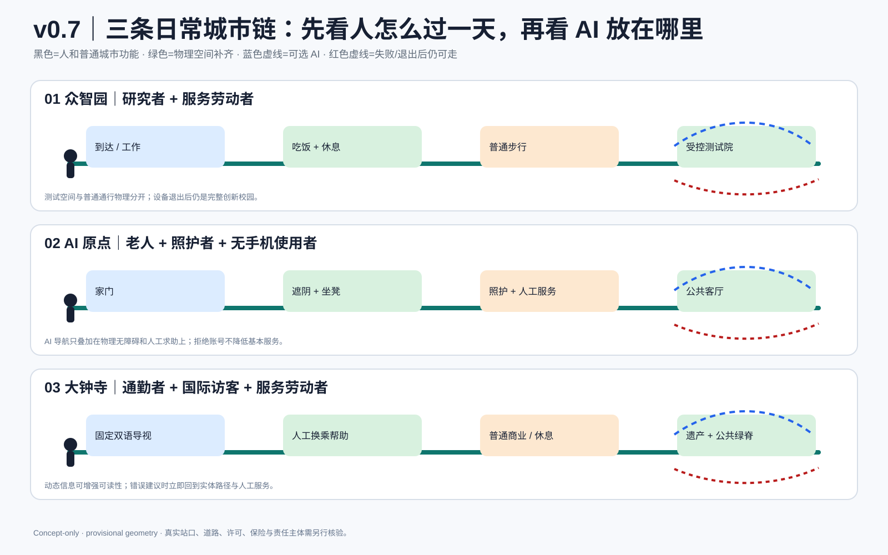
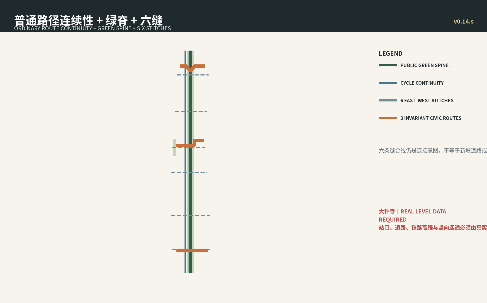

一个总图｜三核 = 三条空间合同
先读城市关系，不先读评分仪表盘。
公共承诺｜把口号变成验收问题
城市剖面｜合同必须落到空间
验收顺序
普通城市任务 → 空间合同 → AI 可选增强 → 人工接管 → 安全退出
C7 普通城市底座
居 / 学 / 护 / 行 / 绿 / 工 / 交仍是七项普通城市能力；AI 不是第八类用地。
HOME居
LEARN学
CARE护
MOVE行
GREEN绿
WORK工
COMMON LIFE交
继承的设计证据




固定包内指标
总体范围11,412,825.386 m²
绿地率0.195008
公共空间比0.033824
绿地面积2,225,592.728 m²
现实边界
- 总体范围与三处重点区 polygon 继续保持 provisional，不作为官方红线或精确面积依据。
- 知春路及铁路/道路节点按真实竖向连续性问题处理，不虚构桥隧工程线位。
- 公开 FAR / 高度只作现实尺度参照，不转写为本方案控制值。
- official geometry / approved controls 到位后触发整包重算，不以局部手工平移制造“更真实”。